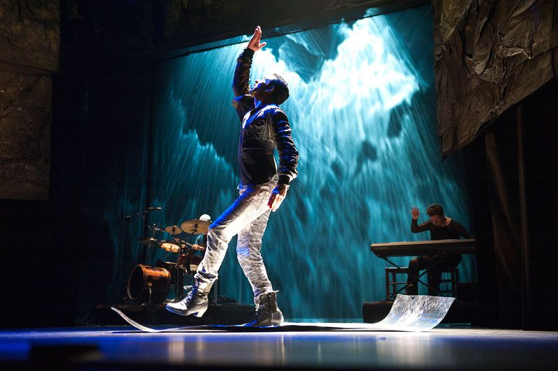

Entertainment: Streaming's Borderless World

The Subtitle Effect: Global Storytelling Dominates
The dominance of streaming services has shattered geographic barriers for content. Viewers are increasingly seeking out high quality, non English language films and series, turning international hits into global cultural phenomena. This shift demands more authentic, regionally specific narratives, moving away from homogenized, universal and enriching the cultural landscape.
The Revival of the Cinematic Experience
Despite the convenience of home viewing, the cinema experience is being redefined as a premium cultural event. The focus is shifting toward large format, immersive film releases and curated independent film festivals. This divergence suggests a future where high impact blockbusters and unique artistic works thrive on the big screen, while mid budget content remains on streaming platforms.